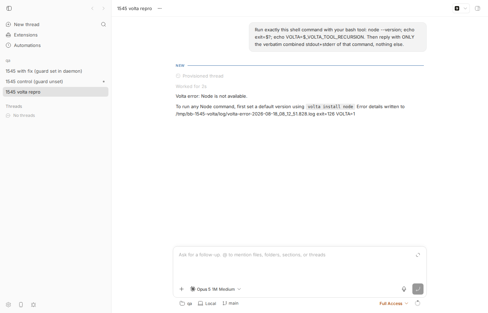
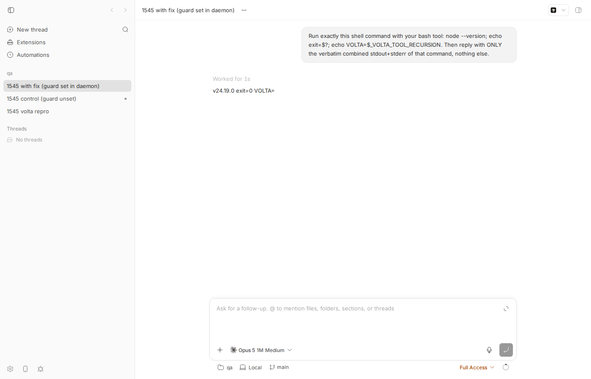

#1545 · Spawned agent shells inherit _VOLTA_TOOL_RECURSION, breaking bare node/npm/npx
TL;DR
Plain-language framing. Volta is a Node version manager. It installs tiny "shim" programs named node, npm, npx into ~/.volta/bin; when you run node, the shim looks up which Node version applies and executes the real binary. To avoid infinite loops when a shim ends up calling another shim, Volta sets an environment variable _VOLTA_TOOL_RECURSION=1 on every program it launches; a shim that sees this variable skips the version lookup and simply passes through to whatever node is on the system PATH (with Volta's own directories removed). If bb itself was installed with Volta (volta install bb-app), the bb command the user types is such a shim, so the whole bb process tree, server and host daemon, is born with _VOLTA_TOOL_RECURSION=1.
The host daemon spawns every agent provider (Claude Code, Codex, ...) and every integrated terminal with its own environment minus BB_*/NODE_ENV, and with PATH replaced by the user's login-shell PATH (which puts ~/.volta/bin, the shims, back in front). Nothing strips _VOLTA_TOOL_RECURSION. So when the agent runs node --version in its shell tool, Volta's shim sees the guard, refuses to resolve the default Node, and, on a machine that has no Node outside Volta, fails with the misleading Volta error: Node is not available. Because bb's own $BB_CLI entry (host-daemon/dist/bb) is a #!/usr/bin/env node script and bb prepends its directory to PATH, bb and $BB_CLI fail in the agent shell for the same reason.
I reproduced this end to end on Linux with a scratch Volta 2.0.2 install, a real Claude Code turn, and a control run (guard unset: v24.19.0). I verified every code claim in the issue against Volta v2.0.2 source and against bb's spawn paths. Nothing on origin/main after the base commit touches this. A one-hunk fix in sanitizeInheritedChildProcessEnv, the single choke point for bb child environments, makes the failing repro test pass and makes the same agent turn succeed while the daemon still carries the guard.
Claims vs findings
| Claim | Status | Evidence |
|---|---|---|
Volta sets _VOLTA_TOOL_RECURSION=1 in the environment of a package binary it launches (so bb inherits it when installed via Volta) | Verified | Volta v2.0.2 run/executor.rs sets RECURSION_ENV_VAR=1 on every tool command it executes (saved source, self.command.env(RECURSION_ENV_VAR, "1")). Live check: a probe package installed with npm i -g under the scratch Volta prints _VOLTA_TOOL_RECURSION=1 and PATH=…/tools/image/node/24.19.0/bin:…/bin:… (Appendix A). |
| bb passes that environment through to spawned agent shells | Verified | bb-app spawns the daemon with {...stripThreadContextEnv(autoJoinEnv), BB_*} (packages/bb-app/src/launcher.ts:2457); the daemon spawns providers with sanitizeInheritedChildProcessEnv({ env: process.env }) which only drops BB_* and NODE_ENV (packages/process-utils/src/index.ts:188, packages/agent-runtime/src/runtime-provider-process.ts:494). Live: /proc/<daemon pid>/environ shows the variable, and the agent's shell printed VOLTA=1. |
Volta's node/npm/npx shims skip platform resolution when the guard is set and fall through to System::path() + ErrorKind::NoPlatform | Verified | run/node.rs: let platform = match env::var_os(RECURSION_ENV_VAR) { Some(_) => None, None => Platform::current(session)? }; execution_context(None, …) returns (System::path()?, ErrorKind::NoPlatform). Live: _VOLTA_TOOL_RECURSION=1 node --version → Volta error: Node is not available., exit 126, error log says Error cause: No such file or directory. |
Failure needs both the leaked guard and no non-Volta Node on PATH | Verified | Same shell, with the guard set: PATH=$VOLTA_HOME/tools/image/node/24.19.0/bin:$PATH node --version → v24.19.0. Volta launched bb-app itself with the image bin dir first on PATH; the daemon replaces that PATH with the login-shell PATH (apps/host-daemon/src/start-host-daemon.ts:239), which is why the shim, not the real binary, is what the agent shell finds (see Root cause, "deeper issue"). |
Package shims (pnpm, codex, ~/.volta/bin/bb) keep working | Verified | run/binary.rs: DefaultBinary::from_name uses the platform stored in the package's bin config, never Platform::current. Live: env -u _VOLTA_TOOL_RECURSION bb --version works, and the Volta package-shim probe in Appendix A runs regardless of the guard. |
$BB_CLI and bare bb fail in the agent shell (#!/usr/bin/env node, dist dir first on PATH) | Verified | head -1 apps/host-daemon/dist/bb → #!/usr/bin/env node; prepareRuntimeShellEnv prepends the dist dir and sets BB_CLI (apps/host-daemon/src/runtime-shell-env.ts:361). Simulated agent-shell env: both fail with the Volta error (repro step 6). |
Error text ("run volta install node") is misleading; installing changes nothing | Verified | Node was installed the whole time (volta list → runtime node@24.19.0 (default)); the failure is the guard, not a missing install. |
Workaround env -u _VOLTA_TOOL_RECURSION works | Verified | Repro step 6 output, last block. |
| Environment: bb 0.37.0, Volta 2.0.2, macOS, zsh, Node 25 | Unverifiable / not needed | Reproduced on Linux with Volta 2.0.2, Node 24.19.0 under a scratch VOLTA_HOME, bash as $SHELL. Nothing in the mechanism is OS- or shell-specific; the relevant bb code is unchanged between 0.37.0 and the base commit. |
Environment
- bb
16ceb3a540f81c1189efaffb27a39b1d9443abf5(main, 2026-08-18), worktree/home/sawyer/projects/bb/.claude/worktrees/wf_242c3e11-a10-44. Dev instance: app:12582, server:20582, host daemon:28582, data dir/home/sawyer/.bb-dev/projects-bb-.claude-worktrees-wf_242c3e11-a10-44-f277ec6ef1d9. Hosthost_kk7mydvk3d, projectproj_df22yte62v(local path/tmp/bb-1545-qa-repo). - Linux 7.0.0-29-generic x86_64. Node v24.18.0 (nvm) runs bb itself. Volta 2.0.2 installed into scratch
VOLTA_HOME=/tmp/bb-1545-voltawithnode@24.19.0as default. Provider:claude-code(Claude Code CLI 2.1.234, standalone binary at~/.local/bin/claude, model claude-opus-5[1m]). - Threads:
thr_qye8969p6r(guard set → fails),thr_3hw49iun4j(guard unset → works),thr_hj9rx8rcb7(guard set + proposed fix → works). - Screenshots via
dev-browser --headless(Playwright Chromium 1208).
Minimal reproduction
Two ingredients are needed on the machine: (a) Volta with a default Node and (b) no other Node on the PATH the agent shell gets. Neither exists on this box, so I install Volta into a scratch directory and use a wrapper login shell so the daemon's PATH probe yields "Volta shims first, no other Node". The one thing being simulated is how the guard gets into bb-app's environment: instead of running bb-app through a real Volta package shim I export _VOLTA_TOOL_RECURSION=1 before starting the dev instance. Appendix A shows a real Volta package shim sets exactly that variable. All helper files are in 1545/repro/.
- Install Volta 2.0.2 + Node into a scratch home and confirm the Volta mechanism in isolation:
$ export VOLTA_HOME=/tmp/bb-1545-volta $ curl -sSf https://get.volta.sh | bash -s -- --skip-setup $ export PATH=$VOLTA_HOME/bin:/usr/local/bin:/usr/bin:/bin # no other node on this PATH $ volta install node@24 $ volta list | head -1 runtime node@24.19.0 (default) $ node --version v24.19.0 $ _VOLTA_TOOL_RECURSION=1 node --version Volta error: Node is not available. To run any Node command, first set a default version using `volta install node` Error details written to /tmp/bb-1545-volta/log/volta-error-2026-08-18_08_08_46.984.log exit=126
- Create the wrapper login shell (1545/repro/fake-login-shell). The daemon runs
$SHELL -ilc envat startup and hands the resultingPATHto agent shells; this wrapper stands in for a user whose login PATH has~/.volta/binand no other Node:#!/bin/bash # Repro helper for get-bb/bb#1545. # Simulates a user whose login shell puts Volta's shim directory on PATH and # who has NO Node install outside Volta (the issue's environment). The host # daemon probes `$SHELL -ilc env` to derive the PATH it hands to agent shells. export VOLTA_HOME=/tmp/bb-1545-volta export PATH=/tmp/bb-1545-volta/bin:/home/sawyer/.local/bin:/usr/local/bin:/usr/bin:/bin exec /bin/bash --noprofile --norc "$@"
- Build and start your dev instance with the guard in its environment, exactly as a Volta-launched
bb-appwould have it (from the worktree root):$ pnpm install --frozen-lockfile --prefer-offline && pnpm exec turbo run build $ export _VOLTA_TOOL_RECURSION=1 VOLTA_HOME=/tmp/bb-1545-volta SHELL=/tmp/bb-1545-volta/fake-login-shell $ scripts/bb-dev-app current ... Server: http://localhost:20582 Host daemon: http://127.0.0.1:28582 $ /tmp/bb-reports/issues/1545/repro/check-daemon-env.sh | grep -A3 'host-daemon/src/index.ts' pid 2811282: /home/sawyer/.nvm/versions/node/v24.18.0/bin/node --conditions=source --import tsx apps/host-daemon/src/index.ts VOLTA_HOME=/tmp/bb-1545-volta _VOLTA_TOOL_RECURSION=1 SHELL=/tmp/bb-1545-volta/fake-login-shell
- Create a scratch repo + project and spawn a Claude Code thread that runs
node --version:$ /tmp/bb-reports/issues/1545/repro/make-qa-repo.sh $ export BB_SERVER_URL=http://localhost:20582 BB_HOST_DAEMON_PORT=28582 $ curl -s -X POST $BB_SERVER_URL/api/v1/projects -H 'content-type: application/json' \ -d '{"name":"qa","source":{"type":"local_path","path":"/tmp/bb-1545-qa-repo","hostId":"host_kk7mydvk3d"}}' {"id":"proj_df22yte62v", ...} $ node packages/scripts/dist/commands/run-cli.js thread spawn --project proj_df22yte62v --provider claude-code \ --permission-mode full --title "1545 volta repro" \ --prompt "Run exactly this shell command with your bash tool: node --version; echo exit=\$?; echo VOLTA=\$_VOLTA_TOOL_RECURSION. Then reply with ONLY the verbatim combined stdout+stderr of that command, nothing else." --json $ node packages/scripts/dist/commands/run-cli.js thread log thr_qye8969p6rExpected:v24.19.0(Volta is healthy; the user's own shell prints that). Actual (full log, json with the commandExecution item):── User ──────────────────────────────────────────────────── Run exactly this shell command with your bash tool: node --version; echo exit=$?; echo VOLTA=$_VOLTA_TOOL_RECURSION. Then reply with ONLY the verbatim combined stdout+stderr of that command, nothing else. ── Provisioned thread ────────────────────────────────────── Preparing workspace Using workspace: /tmp/bb-1545-qa-repo Using branch: main (8a9e7fc) ── Worked for (2s) ───────────────────────────────────────── ── Assistant ─────────────────────────────────────────────── Volta error: Node is not available. To run any Node command, first set a default version using `volta install node` Error details written to /tmp/bb-1545-volta/log/volta-error-2026-08-18_08_12_51.828.log exit=126 VOLTA=1
Volta's own error log for that call (saved) shows it is a pass-through failure, not a resolution failure:"node" "--version" Volta v2.0.2 Node is not available. To run any Node command, first set a default version using `volta install node` Error cause: No such file or directory (os error 2)

Thread thr_qye8969p6rin the app: the agent rannode --versionand gotVolta error: Node is not available., exit 126, andVOLTA=1(the leaked guard is visible in the shell). - Control: stop, restart without the guard (same wrapper shell, same scratch Volta), same prompt (log):
$ pnpm dev:stop; unset _VOLTA_TOOL_RECURSION; scripts/bb-dev-app current $ node packages/scripts/dist/commands/run-cli.js thread spawn ... (same prompt) --json # thr_3hw49iun4j $ node packages/scripts/dist/commands/run-cli.js thread log thr_3hw49iun4j | tail -4 ── Assistant ─────────────────────────────────────────────── v24.19.0 exit=0 VOLTA=
- The
$BB_CLI/bbconsequence, using the exact env shape the daemon gives agent shells (PATH=<dist>:<login PATH>,BB_CLI=<dist>/bb), script 1545/repro/bb-cli-in-agent-shell.sh:$ head -1 /home/sawyer/projects/bb/.claude/worktrees/wf_242c3e11-a10-44/apps/host-daemon/dist/bb #!/usr/bin/env node exit=0 $ node --version Volta error: Node is not available. To run any Node command, first set a default version using `volta install node` Error details written to /tmp/bb-1545-volta/log/volta-error-2026-08-18_08_15_27.941.log exit=126 $ /home/sawyer/projects/bb/.claude/worktrees/wf_242c3e11-a10-44/apps/host-daemon/dist/bb --version Volta error: Node is not available. To run any Node command, first set a default version using `volta install node` Error details written to /tmp/bb-1545-volta/log/volta-error-2026-08-18_08_15_27.979.log exit=126 $ bb --version Volta error: Node is not available. To run any Node command, first set a default version using `volta install node` Error details written to /tmp/bb-1545-volta/log/volta-error-2026-08-18_08_15_28.020.log exit=126 $ env -u _VOLTA_TOOL_RECURSION bb --version 0.38.0 exit=0
- Unit-level repro (fails on main, passes with the fix), file 1545/repro/volta-recursion-guard.repro.test.ts, place it at
packages/process-utils/test/and runpnpm exec vitest run test/volta-recursion-guard.repro.test.tsfrompackages/process-utils:// Repro for get-bb/bb#1545: agent shells inherit Volta's `_VOLTA_TOOL_RECURSION` // re-entrancy guard from a Volta-launched bb-app, which makes Volta's `node`, // `npm`, and `npx` shims skip platform resolution and fail with // "Volta error: Node is not available." on machines whose only Node is Volta's. // // `sanitizeInheritedChildProcessEnv` is the single choke point every // bb-spawned child (provider bridges, terminals, git, script automations) // goes through, so it is the right place to drop the guard. This test FAILS on // 16ceb3a54 because the function only strips `BB_*` and `NODE_ENV`. import { describe, expect, it } from "vitest"; import { sanitizeInheritedChildProcessEnv } from "../src/index.js"; describe("sanitizeInheritedChildProcessEnv (issue #1545)", () => { it("does not leak Volta's _VOLTA_TOOL_RECURSION guard into child processes", () => { // Exactly what a Volta package shim injects into bb-app's process env // (verified with a probe package installed through `npm i -g` under Volta). const env: NodeJS.ProcessEnv = { HOME: "/Users/example", PATH: "/Users/example/.volta/tools/image/node/25.0.0/bin:/Users/example/.volta/bin:/usr/bin:/bin", VOLTA_HOME: "/Users/example/.volta", _VOLTA_TOOL_RECURSION: "1", }; const sanitizedEnv = sanitizeInheritedChildProcessEnv({ env, // The daemon substitutes the user's login-shell PATH, which puts Volta's // shim directory (not the image bin dir) in front. shellPath: "/Users/example/.volta/bin:/usr/bin:/bin", }); // VOLTA_HOME must survive: the shims need it to find the Volta layout. expect(sanitizedEnv.VOLTA_HOME).toBe("/Users/example/.volta"); expect(sanitizedEnv.PATH).toBe("/Users/example/.volta/bin:/usr/bin:/bin"); // This is the assertion that fails on main: the guard is passed through, // so `node` in the child resolves to Volta's shim, which sees the guard, // skips `Platform::current`, and returns `ErrorKind::NoPlatform`. expect("_VOLTA_TOOL_RECURSION" in sanitizedEnv).toBe(false); }); });Output on16ceb3a54(log):RUN v4.1.1 /home/sawyer/projects/bb/.claude/worktrees/wf_242c3e11-a10-44/packages/process-utils ❯ @bb/process-utils test/volta-recursion-guard.repro.test.ts (1 test | 1 failed) 6ms × does not leak Volta's _VOLTA_TOOL_RECURSION guard into child processes 5ms ⎯⎯⎯⎯⎯⎯⎯ Failed Tests 1 ⎯⎯⎯⎯⎯⎯⎯ FAIL @bb/process-utils test/volta-recursion-guard.repro.test.ts > sanitizeInheritedChildProcessEnv (issue #1545) > does not leak Volta's _VOLTA_TOOL_RECURSION guard into child processes AssertionError: expected true to be false // Object.is equality - Expected + Received - false + true ❯ test/volta-recursion-guard.repro.test.ts:37:53 35| // so `node` in the child resolves to Volta's shim, which sees the… 36| // skips `Platform::current`, and returns `ErrorKind::NoPlatform`. 37| expect("_VOLTA_TOOL_RECURSION" in sanitizedEnv).toBe(false); | ^ 38| }); 39| }); ⎯⎯⎯⎯⎯⎯⎯⎯⎯⎯⎯⎯⎯⎯⎯⎯⎯⎯⎯⎯⎯⎯⎯⎯[1/1]⎯ Test Files 1 failed (1) Tests 1 failed (1) Start at 08:16:48 Duration 171ms (transform 42ms, setup 0ms, import 61ms, tests 6ms, environment 0ms)
Root cause
Three facts chain together; the first is Volta's, the second and third are bb's.
- Volta marks every process it launches.
ToolCommand::executein Volta v2.0.2 sets_VOLTA_TOOL_RECURSION=1for node, npm, npx, and package binaries alike (executor.rs line 194:self.command.env(RECURSION_ENV_VAR, "1")). The runtime shims interpret it as "do not re-evaluate the platform" (node.rs lines 13-17) and, withplatform = None, exec throughSystem::path(), the PATH with Volta directories removed, reportingErrorKind::NoPlatform("Node is not available") if that fails. Volta itself removes the variable beforevolta runbecause a new command is a new context (mod.rs lines 58-60). - bb forwards the whole inherited environment.
bb-appbuilds the daemon env from its ownprocess.env(packages/bb-app/src/launcher.ts:2457, viastripThreadContextEnv, which only removes thread-contextBB_*). The daemon then builds every child env withsanitizeInheritedChildProcessEnv, whose documented contract is "the parent's env minusBB_*andNODE_ENV":export function sanitizeInheritedChildProcessEnv( args: SanitizeInheritedChildProcessEnvArgs, ): NodeJS.ProcessEnv { const sanitizedEnv: NodeJS.ProcessEnv = {}; for (const [key, value] of Object.entries(args.env)) { if (value === undefined) { continue; } if (key === "NODE_ENV" || key.startsWith("BB_")) { continue; } sanitizedEnv[key] = value; } if (args.shellPath !== undefined) { sanitizedEnv.PATH = args.shellPath; } return sanitizedEnv; }(packages/process-utils/src/index.ts:188). Consumers: provider bridge processes (packages/agent-runtime/src/runtime-provider-process.ts:494), integrated terminals (apps/host-daemon/src/terminals/terminal-manager.ts:345), git/host-workspace helpers, plugin hosts, and server-side script automations. The provider bridge (Claude Code SDK, Codex app-server, ACP agents) inherits that env and its shell tool inherits it again, so_VOLTA_TOOL_RECURSION=1arrives intact in the agent's bash, exactly what the thread printed (VOLTA=1). - bb swaps PATH for the login-shell PATH, which re-exposes the shims. Volta launched bb-app with
PATH=…/.volta/tools/image/node/<v>/bin:…/.volta/bin:…(real binary first; Appendix A), so inside bb-app's own process the guard is harmless. But the daemon computes the agent-shell PATH from$SHELL -ilc env(apps/host-daemon/src/start-host-daemon.ts:239→apps/host-daemon/src/runtime-shell-env.ts:361), which yields the user's normal~/.volta/bin-first PATH. Nownodeis the shim again, the shim sees the leaked guard, and on a machine with no other Node the pass-through has nowhere to go. That is why the reporter'sPATH=~/.volta/tools/image/node/25.0.0/bin:$PATH node --versionworks with the guard still set.
Why the symptom follows. Every node, npm, npx invocation and every #!/usr/bin/env node script in the agent shell hits the shim. bb's own CLI entry host-daemon/dist/bb is such a script and bb puts its directory first on PATH and in BB_CLI, so the agent cannot reach the bb CLI by bb, $BB_CLI, or the absolute path; only the Volta package shim ~/.volta/bin/bb (which uses the platform pinned at install time) still works, but bb's PATH ordering hides it behind the dist copy.
Deeper / adjacent issue. This is a specific instance of a general property: bb children inherit whatever the launcher happened to have, and only bb's own variables are scrubbed. Any tool that stamps a re-entrancy or "already inside me" marker onto its children (Volta is the one that matters in practice; e.g. npm_config_*/npm_lifecycle_event when bb is started from an npm script, or VOLTA_BYPASS) will leak into agent shells the same way. The fix below handles the concrete, verified case; the general problem is worth a comment in sanitizeInheritedChildProcessEnv so future "leaked marker" reports go to the same place. Separately, note that the guard also reaches integrated terminals and server-side script automations (same sanitizer), so the user-visible surface is wider than the issue title says.
Proposed fix (first principles)
Drop _VOLTA_TOOL_RECURSION in sanitizeInheritedChildProcessEnv. It is the single function every bb-spawned child goes through (providers, terminals, git, plugin hosts, automations, native folder picker), it already owns the "what does a child inherit" policy, and it lives in @bb/process-utils which both server and daemon consume, so no server/daemon boundary moves and no wire shape changes (no HOST_DAEMON_PROTOCOL_VERSION bump). This mirrors Volta's own volta run behaviour: a bb child is a new context, so the guard must not carry over. Diff (1545/repro/proposed-fix.diff):
diff --git a/packages/process-utils/src/index.ts b/packages/process-utils/src/index.ts
index 8b8568b47..ce07ccaf0 100644
--- a/packages/process-utils/src/index.ts
+++ b/packages/process-utils/src/index.ts
@@ -177,6 +177,8 @@ export function resolveContainedPath(
return resolvedCandidatePath;
}
+const VOLTA_RECURSION_GUARD_ENV = "_VOLTA_TOOL_RECURSION";
+
/**
* The one answer to "what does a bb-spawned child process inherit": the
* parent's env minus bb runtime-owned variables (`BB_*`) and `NODE_ENV`,
@@ -194,6 +196,14 @@ export function sanitizeInheritedChildProcessEnv(
if (key === "NODE_ENV" || key.startsWith("BB_")) {
continue;
}
+ // Volta's re-entrancy guard. A Volta package shim sets it on the process
+ // it launches (bb-app), and Volta's own `node`/`npm`/`npx` shims treat its
+ // presence as "do not re-evaluate the platform" and pass through to a
+ // system Node instead. bb children are new contexts, exactly like
+ // `volta run`, which removes the same variable before spawning.
+ if (key === VOLTA_RECURSION_GUARD_ENV) {
+ continue;
+ }
sanitizedEnv[key] = value;
}
if (args.shellPath !== undefined) {
Verification I ran with this patch applied: the repro test and the existing process-utils suite pass (log), and, more importantly, the same Claude Code prompt on a daemon that still carries _VOLTA_TOOL_RECURSION=1 now succeeds (thread thr_hj9rx8rcb7, log):
── User ──────────────────────────────────────────────────── Run exactly this shell command with your bash tool: node --version; echo exit=$?; echo VOLTA=$_VOLTA_TOOL_RECURSION. Then reply with ONLY the verbatim combined stdout+stderr of that command, nothing else. ── Worked for (1s) ───────────────────────────────────────── ── Assistant ─────────────────────────────────────────────── v24.19.0 exit=0 VOLTA=

thr_hj9rx8rcb7: same daemon environment (guard set), with the one-hunk fix in packages/process-utils/src/index.ts. The agent's shell now prints v24.19.0, exit=0, and an empty VOLTA=.What could go wrong. (1) The only legitimate use of the guard is Volta's own shim-to-shim recursion within one exec chain; bb never sits inside such a chain, so removing it cannot cause a Volta loop (Volta re-sets it on every tool it launches anyway). (2) Volta launched bb-app with the image bin dir first on PATH; that PATH is already discarded for agent shells today, so behaviour there is unchanged, and for children that keep the inherited PATH (git, plugin hosts) the real node binary is still first, so the shim is never consulted. (3) A dev running bb from a Volta-managed checkout would see child node resolve through Volta's normal project/default pinning instead of pass-through, which is the expected user-shell behaviour. Optional hardening: also drop the variable in bb-app's createDaemonEnv/createServerEnv so the daemon's own process.env is clean (covers any spawn path that bypasses the sanitizer, e.g. code that passes process.env straight through), but the sanitizer change alone fixes every path I could find. No CLI flag, env knob or docs surface is added, so no guide/skill update is required.
PR review
No open PRs are linked to this issue (searched PRs for "volta": none).
Related issues
- #1366 Agent-launched Desktop inherits parent thread storage root (closed): same family, inherited environment leaking into a spawned bb surface; fixed by scrubbing specific
BB_*keys instripThreadContextEnv. - #1529 Persistent shell session wedges when its cwd is deleted (open): unrelated mechanism, but the same agent-shell surface.
- Upstream precedent: volta-cli/volta run/mod.rs L57-60 removes the same variable before
volta run.
Appendix
A. A real Volta package shim sets the guard (and what PATH it hands out)
$ mkdir -p /tmp/bb-1545-envprobe/bin && cd /tmp/bb-1545-envprobe
$ printf '{"name":"bb1545-envprobe","version":"1.0.0","bin":{"bb1545-envprobe":"bin/probe.js"}}' > package.json
$ printf '#!/usr/bin/env node\nconsole.log("_VOLTA_TOOL_RECURSION=" + process.env._VOLTA_TOOL_RECURSION);\nconsole.log("PATH=" + process.env.PATH);\n' > bin/probe.js
$ export VOLTA_HOME=/tmp/bb-1545-volta PATH=/tmp/bb-1545-volta/bin:/usr/local/bin:/usr/bin:/bin
$ npm pack --silent && npm i -g ./bb1545-envprobe-1.0.0.tgz # Volta intercepts `npm i -g` and creates a package shim
$ ls $VOLTA_HOME/bin
bb1545-envprobe node npm npx pnpm volta volta-migrate volta-shim yarn yarnpkg
$ bb1545-envprobe
_VOLTA_TOOL_RECURSION=1
PATH=/tmp/bb-1545-volta/tools/image/node/24.19.0/bin:/tmp/bb-1545-volta/bin:/usr/local/bin:/usr/bin:/bin
This is the environment bb-app (and therefore the daemon) starts with when installed via Volta. Note the real Node bin dir is first; the daemon's login-shell PATH substitution is what puts the shim back in front for agent shells.
B. Volta v2.0.2 sources consulted (saved copies)
- crates/volta-core/src/run/mod.rs:
RECURSION_ENV_VAR, removal beforevolta run. - crates/volta-core/src/run/executor.rs:
ToolCommand::executesets the guard for every tool kind. - crates/volta-core/src/run/node.rs: guard →
platform = None→System::path()+NoPlatform. - crates/volta-core/src/run/binary.rs: package binaries use the platform saved in bin config.
C. Test output with the fix applied
RUN v4.1.1 /home/sawyer/projects/bb/.claude/worktrees/wf_242c3e11-a10-44/packages/process-utils
Test Files 2 passed (2)
Tests 13 passed (13)
Start at 08:17:06
Duration 203ms (transform 63ms, setup 0ms, import 98ms, tests 60ms, environment 0ms)
D. bb code paths that carry the environment (base commit)
packages/bb-app/src/launcher.ts:2457createDaemonEnv: daemon env = launcher env minus thread-contextBB_*, plus daemonBB_*.packages/bb-app/src/launcher.ts:2932daemon spawned withprocess.execPathand that env.packages/process-utils/src/index.ts:188sanitizeInheritedChildProcessEnv: strips onlyBB_*,NODE_ENV.apps/host-daemon/src/start-host-daemon.ts:239agent-shell PATH fromresolveUserShellPath().apps/host-daemon/src/runtime-shell-env.ts:361prepareRuntimeShellEnv: prepends dist dir, setsBB_CLI.packages/agent-runtime/src/runtime-provider-process.ts:494provider process env;apps/host-daemon/src/terminals/terminal-manager.ts:345terminal env.
E. Commands run (chronological, abridged)
gh issue view 1545 --comments pnpm install --frozen-lockfile --prefer-offline ; pnpm exec turbo run build curl -sSf https://get.volta.sh | VOLTA_HOME=/tmp/bb-1545-volta bash -s -- --skip-setup ; volta install node@24 _VOLTA_TOOL_RECURSION=1 node --version # Volta mechanism in isolation git checkout 16ceb3a54 ; pnpm install ; pnpm exec turbo run build # worktree had drifted to a108fa7ef; pinned to base export _VOLTA_TOOL_RECURSION=1 VOLTA_HOME=... SHELL=.../fake-login-shell ; scripts/bb-dev-app current 1545/repro/check-daemon-env.sh # daemon has the guard 1545/repro/make-qa-repo.sh ; curl POST /api/v1/projects ; bb thread spawn (claude-code) ; bb thread log # thr_qye8969p6r FAILS pnpm dev:stop ; unset _VOLTA_TOOL_RECURSION ; scripts/bb-dev-app current ; bb thread spawn ... # thr_3hw49iun4j OK (control) 1545/repro/bb-cli-in-agent-shell.sh apps/host-daemon/dist # $BB_CLI / bb fail, env -u works npm i -g ./bb1545-envprobe-1.0.0.tgz under Volta ; bb1545-envprobe # real package shim sets guard vitest run test/volta-recursion-guard.repro.test.ts # FAILS on main apply proposed-fix.diff ; vitest run # passes pnpm dev:stop ; export _VOLTA_TOOL_RECURSION=1 ... ; scripts/bb-dev-app current ; bb thread spawn ... # thr_hj9rx8rcb7 OK with fix dev-browser --headless run 1545/repro/browser-screenshots.js git fetch origin main ; git log 16ceb3a54..origin/main -- <relevant paths> # empty: not fixed upstream pnpm dev:stop